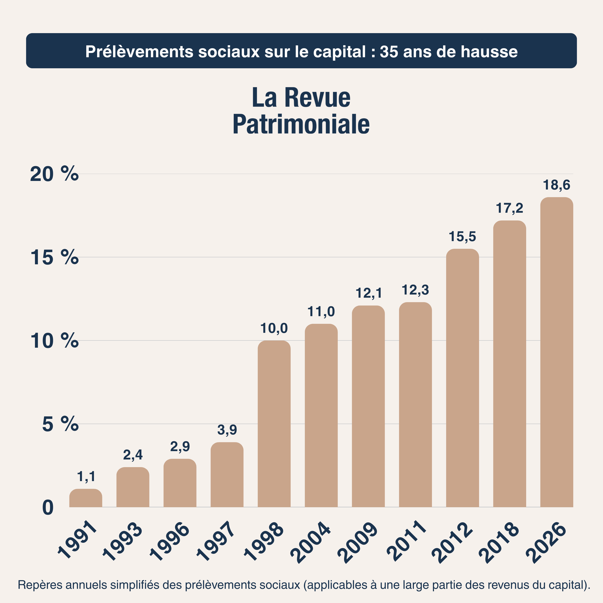
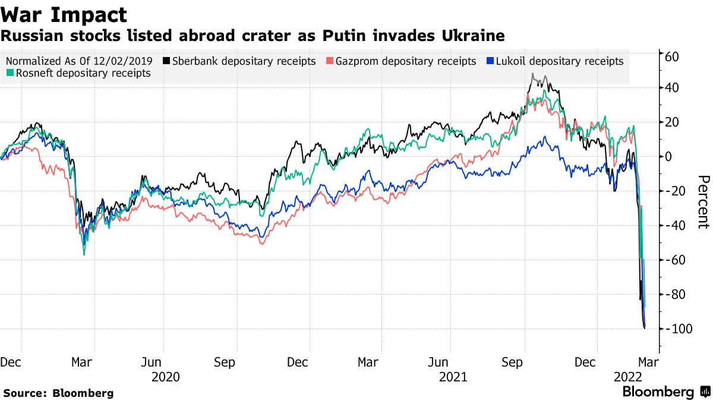
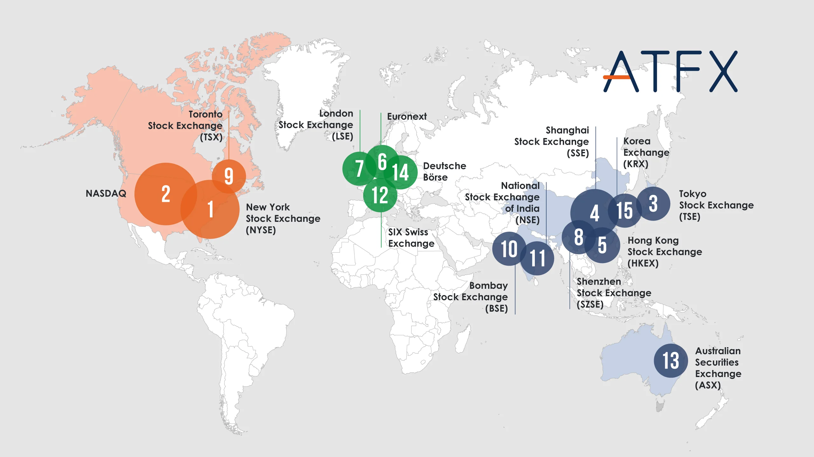
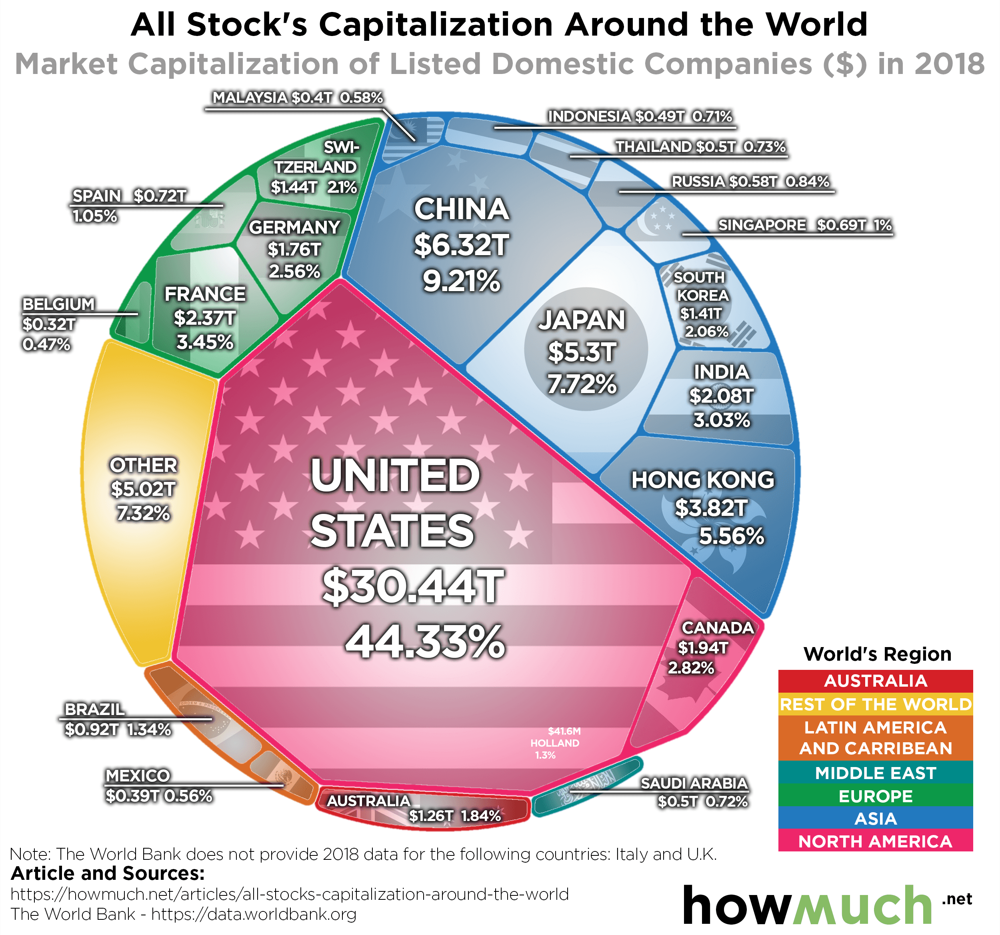
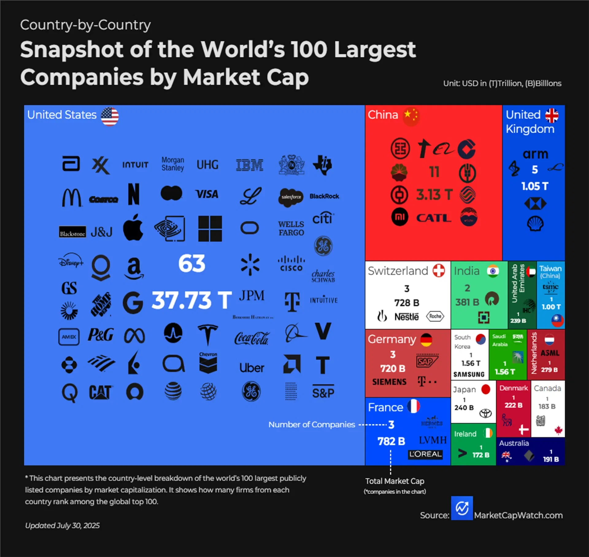
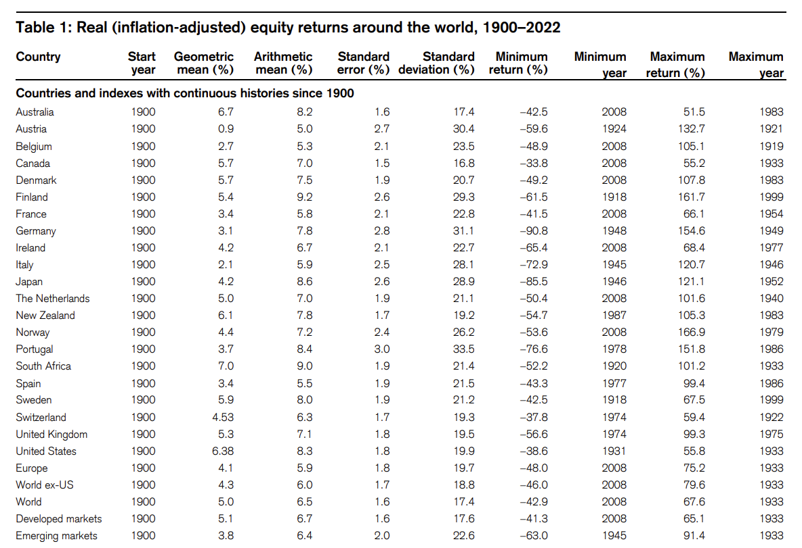
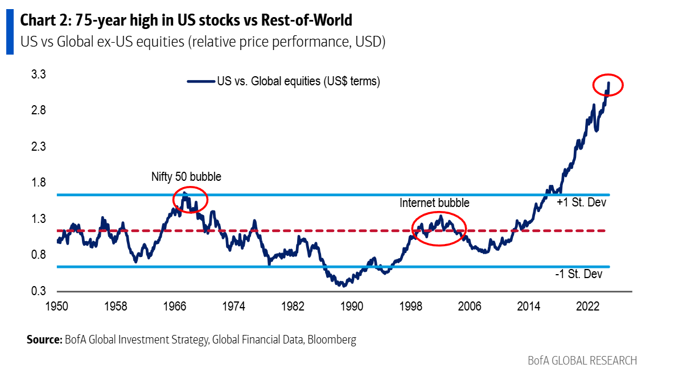
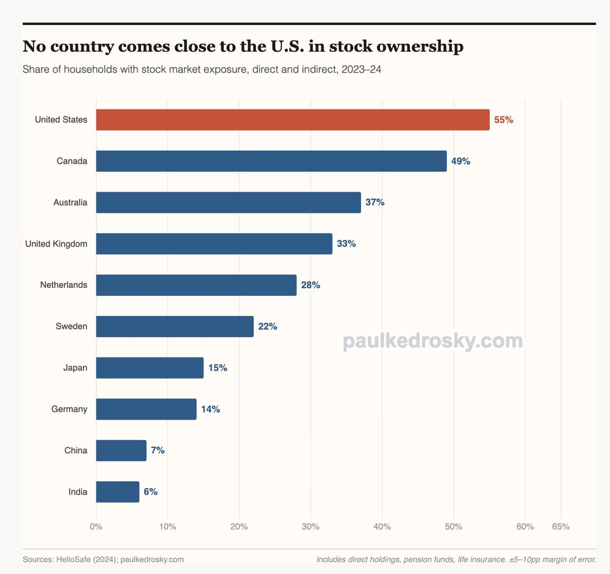
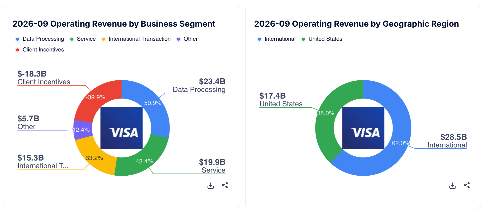

Lors du Module 3, et plus précisément dans le chapitre 3.4 consacré à la typologie des secteurs d'activité, nous avions étudié ensemble les 11 grands secteurs qui composent l'économie mondiale. Notre conclusion était alors sans appel : il est non seulement inutile, mais surtout hautement contre-productif de vouloir s'exposer aveuglément aux 11 secteurs au nom d'une pseudo-diversification. Tous les secteurs ne se valent pas. Certains sont structurellement porteurs, peu intensifs en capital et très rentables (comme la technologie, la santé ou les réseaux de paiement), tandis que d'autres détruisent de la valeur sur le long terme (comme les compagnies aériennes, les télécoms ou les banques traditionnelles).
Eh bien, sachez que cette loi implacable s'applique exactement de la même manière aux zones géographiques et aux pays dans lesquels vous investissez votre argent. Tout comme il existe d'excellents secteurs et d'autres à fuir absolument, il existe des juridictions taillées pour prospérer en bourse et d'autres qui peuvent anéantir vos efforts d'analyse en une seule nuit.
1. Les 4 Risques Géographiques : Du plus insidieux au plus radical
Pour bien comprendre pourquoi la sélection du pays d'investissement est une question de survie financière, je souhaiterais vous présenter quatre exemples concrets de problèmes majeurs auxquels un investisseur peut être confronté lorsqu'il place son capital dans le mauvais pays. Nous allons les parcourir crescendo, de l'impact le plus modéré jusqu'au scénario le plus destructeur.
🇧🇷 A. Le Brésil : Le choc politique et l'effondrement monétaire
Les marchés émergents attirent souvent les investisseurs particuliers par leurs multiples de valorisation très bas (des PER de 5 ou 6) et des promesses de dividendes généreux. Mais cette décote apparente cache une instabilité politique chronique. Le 26 octobre 2026, suite à la réélection de Lula au Brésil — figure de la gauche brésilienne dont le programme de dépenses publiques inquiétait fortement les milieux financiers —, la réaction des marchés a été d'une violence inouïe.

En l'espace d'une seule journée, le rendement des obligations d'État brésiliennes à 10 ans a littéralement explosé (signe d'une défiance massive des créanciers envers la dette du pays), la monnaie nationale (le réal brésilien) a lourdement chuté face au dollar, et l'indice boursier de référence du pays, le Bovespa (Ibovespa), a dévissé de près de 14 %, enregistrant sa pire chute journalière depuis le krach de 2020. En quelques heures, un simple scrutin électoral a balayé des années de performance pour les actionnaires étrangers.
🇫🇷 B. La France : L'asphyxie fiscale progressive
Rapprochons-nous maintenant de nos frontières avec un exemple qui touche directement un grand nombre d'investisseurs francophones : la France. Bien que la France abrite quelques fleurons mondiaux exceptionnels (notamment dans le luxe et l'industrie), l'État français souffre d'un déficit budgétaire chronique et d'un poids de la dette publique qui grossit dangereusement d'année en année.

Face à cette incapacité à réduire ses dépenses, la réponse systématique des gouvernements successifs a été d'augmenter la fiscalité sur l'épargne et les revenus du capital. Le graphique ci-dessus est édifiant : lors de leur création en 1991, les prélèvements sociaux sur le capital s'élevaient à un modeste 1,1 %. Au fil des décennies, ils n'ont cessé de grimper — 10 % en 1998, 12,1 % en 2009, 15,5 % en 2012, 17,2 % en 2018, jusqu'à atteindre 18,6 % en 2026. Cette ponction ampute directement la performance nette de votre portefeuille et freine la boule de neige de vos intérêts composés. Pire encore : dans un climat politique souvent hostile aux actionnaires, absolument rien ne garantit que les législateurs s'arrêteront là, que ce soit par de nouvelles hausses de la Flat Tax, des taxes sur les rachats d'actions ou une remise en cause des avantages fiscaux existants.
🇷🇺 C. La Russie : Le risque géopolitique et le gel pur et simple
Montons encore d'un cran dans la gravité avec la Russie. Avant février 2022, de nombreux investisseurs particuliers et professionnels achetaient des actions russes (comme le géant gazier Gazprom, le pétrolier Lukoil ou la banque Sberbank), séduits par des ratios cours/bénéfices dérisoires de 3 ou 4 et des rendements de dividendes dépassant les 10 %.

Lorsque la Russie est entrée en guerre contre l'Ukraine en février 2022, le piège s'est refermé instantanément. En quelques séances, la valeur des certificats de dépôt russes cotés à Londres et New York s'est effondrée de près de 99 % avant que les places boursières occidentales ne suspendent totalement leur cotation. Depuis ce jour, en raison des sanctions internationales et du blocage réciproque entre la Bourse de Moscou et les chambres de compensation européennes (Euroclear et Clearstream), les actions russes détenues sur les comptes-titres des épargnants européens sont totalement gelées. Les investisseurs qui possédaient ces titres ne peuvent toujours rien en faire : il leur est strictement impossible de vendre leurs lignes, même à perte, pour récupérer leurs liquidités et les réinvestir ailleurs. Leur capital est pris en otage.
🇨🇳 D. La Chine : Le risque d'interventionnisme d'État
Terminons ce tour d'horizon par le cas le plus fascinant et le plus trompeur : la Chine. Sur le papier, la Chine coche toutes les cases : seconde puissance économique mondiale, une classe moyenne gigantesque, des innovations technologiques de pointe dans l'intelligence artificielle, les véhicules électriques ou le commerce en ligne, et des géants ultra-rentables comme Tencent, Alibaba ou BYD. Où se situe donc le problème ? Dans la nature même de son régime politique.
La Chine n'est pas une démocratie libérale de marché, mais un régime autoritaire à parti unique pratiquant un capitalisme d'État étroitement contrôlé. Dans ce système, le droit à la propriété privée et l'intérêt des actionnaires (a fortiori étrangers) sont systématiquement subordonnés aux objectifs politiques et idéologiques du Parti communiste chinois. Du jour au lendemain, par simple décret administratif, Pékin peut décider de démanteler un monopole privé, d'interdire à tout un secteur économique de réaliser des profits (comme ce fut le cas en 2021 avec le secteur du soutien scolaire privé, anéanti en une semaine), ou de nationaliser de facto une entreprise stratégique.
De plus, la plupart des investisseurs ignorent que lorsqu'ils achètent une action chinoise en bourse, la loi chinoise leur interdit souvent de posséder directement des parts de l'entreprise locale : ils achètent en réalité une coquille vide immatriculée aux îles Caïmans (une structure dite VIE — Variable Interest Entity) qui détient un simple contrat commercial avec la société chinoise. Si le gouvernement chinois décide demain d'invalider ces contrats, votre argent investi disparaît purement et simplement, sans que vous ne disposiez du moindre recours juridique.
2. La Règle d'Or : Le Pays prime toujours sur l'Entreprise
Ces quatre exemples illustrent une vérité fondamentale : bien choisir le pays dans lequel on investit son argent est primordial.
Comprenez bien ceci : peu importe que l'entreprise dans laquelle vous investissez soit absolument parfaite sur le plan fondamental — imaginez un monopole pur et inattaquable, un bilan avec zéro dette, une croissance insolente et des marges extraordinaires —, si cette entreprise est domiciliée dans un pays politiquement instable, fiscalement confiscatoire ou hostile au capitalisme, ce risque macroéconomique finira tôt ou tard par ruiner votre performance et votre investissement.
À cela s'ajoute la réalité mathématique implacable du taux de change. En tant qu'investisseur, vous devez impérativement investir dans des zones économiques dont la devise est structurellement forte et stable. Si vous achetez une action étrangère dont le cours réalise une performance exceptionnelle de +100 % en monnaie locale, mais que dans le même temps, la devise de ce pays s'effondre de -50 % face à l'Euro ou au Dollar, votre gain réel une fois converti dans votre poche est réduit à néant. La faiblesse monétaire a dévoré toute la création de valeur de l'entreprise.
La conclusion coule de source et rejoint exactement la philosophie du Quality Investing : investissez dans ce qui fonctionne déjà et qui a prouvé sa supériorité historique. Ne perdez pas votre temps et votre énergie à chercher d'obscures petites ou moyennes capitalisations (Small & Mid Caps) méconnues au fin fond de pays exotiques en espérant dénicher la pépite qui fera x5 en deux ans (spoiler : cela n'arrivera pas, ou le risque politique vous emportera avant). Concentrez votre patrimoine dans des juridictions résolument pro-business, dotées d'un État de droit solide et d'une monnaie de premier plan. Et dans ce domaine, un pays écrase littéralement toute la concurrence mondiale : les États-Unis d'Amérique. Voici quatre faits chiffrés irréfutables qui le démontrent.
3. Pourquoi les États-Unis sont le Paradis de l'Investisseur
🏛️ 1. Les 2 plus grandes places boursières de la planète
Lorsqu'on observe la cartographie des 15 plus grandes places boursières mondiales, la domination américaine saute immédiatement aux yeux : les États-Unis détiennent les deux premières places du podium mondial, et ce, avec une avance abyssale sur le reste du globe.

Les chiffres donnent le tournis : en première position, le New York Stock Exchange (NYSE) affiche une capitalisation boursière avoisinant les 28 000 milliards de dollars (28 trillions $). Juste derrière lui, en deuxième position, le NASDAQ pèse près de 25 000 milliards de dollars (25 trillions $). Et qui monte sur la troisième marche du podium mondial ? La Bourse de Tokyo (Tokyo Stock Exchange - TSE), avec une capitalisation d'environ 6 000 milliards de dollars… soit plus de quatre fois moins que le seul NASDAQ !
Si l'immense majorité des échanges boursiers mondiaux se déroule à Wall Street, cela n'a rien d'un hasard historique. Depuis plus de deux siècles, les États-Unis ont bâti l'écosystème juridique, financier et culturel le plus favorable à l'entrepreneuriat et à l'investissement jamais créé par l'homme : une protection constitutionnelle sacrée de la propriété privée, des tribunaux commerciaux indépendants, une régulation stricte de la transparence comptable via la SEC, et une liquidité si profonde que les meilleures entreprises de la planète entière rêvent toutes de venir se faire coter à New York pour lever des capitaux.

Le graphique ci-dessus illustre cette disproportion vertigineuse : dès 2018, 44,33 % de la capitalisation boursière mondiale des entreprises cotées se concentrait aux États-Unis, représentant la somme astronomique de 30 440 000 000 000 $ — oui, plus de 30 000 milliards de dollars ! La Chine, pourtant deuxième puissance mondiale au classement, ne pesait alors qu'environ 6 320 milliards de dollars (9,21 %), soit près de cinq fois moins. Et cet écart n'a fait que s'accentuer depuis.
🏆 2. Les plus grandes entreprises du monde sont américaines
Cette domination boursière n'est pas une bulle artificielle : elle est le reflet direct de l'excellence opérationnelle des entreprises américaines. Lorsqu'une société naît aux États-Unis, elle bénéficie immédiatement d'un marché intérieur unifié de plus de 335 millions de consommateurs au fort pouvoir d'achat, parlant la même langue et utilisant la même monnaie, avant de partir à la conquête du monde.

Le constat est sans appel : sur les 100 plus grandes entreprises du monde en termes de capitalisation boursière, 63 sont américaines ! Qu'il s'agisse de Microsoft, Apple, NVIDIA, Alphabet (Google), Amazon, Meta, Visa, Mastercard, Eli Lilly ou Costco, les États-Unis exercent un monopole quasi absolu sur les infrastructures technologiques, financières et médicales du XXIe siècle. À titre de comparaison, la Chine n'en place que 11 dans ce Top 100, le Royaume-Uni 5, et la France, l'Allemagne ou la Suisse seulement 3 chacune.
📈 3. Des performances historiques inégalées et une culture actionnariale vitale
Qui dit entreprises d'exception dit nécessairement rendements boursiers d'exception. Une étude de référence menée par la branche Investment du Crédit Suisse a analysé la performance réelle (c'est-à-dire nette d'inflation) de toutes les grandes bourses mondiales sur plus d'un siècle, de 1900 à 2022.

Sur plus de 122 ans d'histoire — incluant deux Guerres mondiales, la Grande Dépression de 1929, les chocs pétroliers, l'éclatement de la bulle Internet et la crise de 2008 —, les États-Unis se hissent sur le podium mondial avec un rendement annuel moyen ajusté de l'inflation de 6,4 % par an (soit près de 9,5 % à 10 % par an avant inflation). Vous remarquerez sur ce tableau que les deux premières places historiques sur le XXe siècle reviennent à l'Afrique du Sud (7,0 %) et à l'Australie (6,7 %). Pourquoi ? Tout simplement en raison de l'essor prodigieux des sociétés minières (or, diamants, charbon, minerais) fortement implantées dans ces deux pays riches en ressources naturelles au cours du siècle dernier.
Or, cette époque est révolue. Le boom séculaire des sociétés minières traditionnelles s'est largement estompé, tandis que l'économie moderne s'est dématérialisée. Au cours des dernières décennies, les États-Unis ont non seulement rattrapé leur retard, mais ils ont littéralement distancé le reste de la planète grâce à la locomotives surpuissante de leur secteur Technologique, capable de générer des croissances à deux chiffres sans avoir besoin de creuser la moindre mine.

Comme le montre cette étude de Bank of America Global Research, le ratio de performance entre les indices américains et le reste du monde (Global ex-US) a franchi le seuil historique de 3 au cours de cette décennie, pulvérisant tous les records des 75 dernières années. Les États-Unis creusent un fossé compétitif sans précédent avec les vieilles économies européennes ou japonaises.
Enfin, il existe une raison structurelle et politique profonde pour laquelle la bourse américaine ne peut pas être laissée à l'abandon : la culture actionnariale du peuple américain.

Les Américains ont parfaitement compris la puissance des marchés financiers et la qualité de leurs entreprises : 55 % des ménages américains sont exposés au marché boursier, soit le taux le plus élevé de la planète (contre seulement 14 % en Allemagne ou 7 % en Chine). Contrairement aux pays européens qui reposent sur des systèmes de retraite par répartition gérés par l'État, les Américains constituent leur propre retraite par capitalisation, directement investie en actions via leurs plans 401(k) et IRA. Par conséquent, la prospérité de Wall Street est une question de sécurité nationale vitale pour la superpuissance américaine : qu'un président soit Démocrate ou Républicain, aucun gouvernement américain ne peut se permettre de saboter ses entreprises cotées sans provoquer la ruine immédiate des retraités et des électeurs du pays. En investissant aux États-Unis, vos intérêts sont parfaitement alignés avec ceux des dirigeants et des citoyens américains.
💵 4. La puissance hégémonique du Dollar américain (USD)
Le quatrième et dernier pilier qui consolide la suprématie des investissements américains est d'ordre monétaire : le Dollar américain (USD). Depuis les accords de Bretton Woods en 1944, le dollar s'est imposé comme la monnaie de réserve mondiale incontestée et le véritable standard universel des échanges commerciaux entre pays et continents.
Aujourd'hui encore, près de 60 % des réserves de change des banques centrales de la planète sont détenues en dollars, plus de 80 % des transactions financières internationales transitent par le billet vert, et la quasi-totalité des matières premières stratégiques (pétrole, gaz, or, blé, cuivre) est cotée et facturée en dollars. Cette demande structurelle permanente confère au dollar un privilège exorbitant : celui d'être la valeur refuge ultime. Lorsqu'une crise géopolitique ou économique éclate dans le monde, les capitaux fuient les devises secondaires pour se réfugier massivement vers le dollar et les bons du Trésor américain. Détenir des actifs libellés en dollars (et qui génèrent eux-mêmes des flux de trésorerie dans toutes les devises du monde avant de les rapatrier en USD) constitue donc une assurance monétaire inestimable sur le très long terme.
La citation à retenir 💬
"Never bet against America." (Ne pariez jamais contre l'Amérique.)
— Warren Buffett
4. Les Pièges Psychologiques et la Vraie Diversification
🏠 A. Le piège du "Biais Domestique" (Home Bias)
Lorsque l'on aborde la question de la géographie boursière, il est impératif de mettre en lumière l'un des biais cognitifs les plus dévastateurs pour un investisseur européen : le fameux "Biais Domestique" (ou Home Bias en anglais). Naturellement, le cerveau humain est programmé pour faire confiance à ce qu'il connaît, ce qu'il voit et ce qu'il consomme au quotidien. En France ou en Belgique, cela se traduit très souvent par des portefeuilles d'investisseurs particuliers concentrés à 80 % ou 90 % sur le CAC 40, le BEL 20, ou l'Euro Stoxx 50. On achète la banque au coin de la rue, l'opérateur télécom national ou la chaîne de supermarchés locale par pur confort psychologique.
Ce biais de familiarité coûte extrêmement cher en coût d'opportunité. En vous limitant à votre marché local pour vous rassurer, vous vous privez délibérément de la croissance des leaders technologiques mondiaux. Vous finissez par accumuler des entreprises souvent matures, lourdement endettées, évoluant dans des marchés saturés, et soumises aux instabilités fiscales et politiques que nous avons évoquées plus haut. L'investisseur rationnel doit impérativement s'affranchir de ses propres frontières géographiques pour aller chercher la qualité absolue, là où elle se trouve, sans aucun patriotisme économique mal placé.
🌎 B. Siège social vs Origine des revenus : La véritable diversification
Face à l'écrasante domination américaine, une objection légitime revient très fréquemment : "Si j'investis 80 % ou 90 % de mon patrimoine aux États-Unis, ne suis-je pas dangereusement surexposé à l'économie américaine en cas de récession locale ?". C'est ici qu'il faut faire une distinction intellectuelle cruciale pour tout investisseur de qualité : il faut séparer la juridiction (le pays où l'entreprise est cotée) de l'origine réelle de ses revenus.

Les géants américains de la qualité (comme Microsoft, Visa, Apple, ou Google) ne sont pas de simples entreprises locales, ce sont de véritables empires multinationaux. En moyenne, ces immenses conglomérats génèrent entre 40 % et 60 % de leur chiffre d'affaires en dehors des États-Unis. Ils vendent leurs logiciels aux entreprises européennes, leurs smartphones aux consommateurs asiatiques et leurs services financiers sur les marchés émergents d'Amérique latine.
Par conséquent, en achetant une belle multinationale américaine, vous captez en réalité la croissance économique du monde tout entier, de l'Inde au Japon en passant par l'Europe. Mais le coup de génie réside dans le fait que vous captez ces flux mondiaux tout en bénéficiant du bouclier juridique, de la propriété intellectuelle inviolable, de la liquidité colossale et de la monnaie forte qu'offrent les marchés américains. Vous êtes mondialement diversifié dans vos rentrées d'argent, mais parfaitement sécurisé dans la domiciliation de vos actifs.
5. La Nuance : Faut-il investir EXCLUSIVEMENT aux États-Unis ?
Attention, mon propos ici n'est absolument pas de vous dicter qu'il faut investir 100 % de votre patrimoine aux États-Unis en appliquant un boycott aveugle sur le reste de la planète. Tout comme nous l'avons enseigné au sujet des secteurs d'activité, il ne faut jamais exclure catégoriquement un pan du marché par simple dogmatisme, sous peine de passer à côté de véritables chefs-d'œuvre industriels.
La grande majorité des entreprises les plus rentables et les plus solides se trouvent à Wall Street, c'est un fait statistique et historique que nous avons largement démontré. Cependant, il existe d'incroyables exceptions qui dominent leur marché à l'échelle planétaire et qui sont cotées en dehors des frontières américaines. Prenez l'exemple de notre propre portefeuille : nous détenons ASML aux Pays-Bas, une entreprise qui possède le monopole mondial absolu sur les machines de lithographie EUV. Nous possédons également TSMC à Taïwan, l'unique fonderie capable de graver les puces nécessaires à l'intelligence artificielle. On pourrait également citer les fleurons européens du luxe comme LVMH ou Hermès, qui jouissent d'un Pricing Power inébranlable et millénaire qu'aucune entreprise américaine ne peut répliquer.
La règle de conduite est donc la suivante : on ne sort du marché américain que pour acquérir une entreprise d'une qualité si exceptionnelle qu'elle n'a aucun équivalent strict aux États-Unis. Lorsque vous identifiez une telle pépite à l'étranger, vous avez tout à fait le droit (et même le devoir) de l'intégrer à votre portefeuille. Mais vous devez le faire en vous étant rigoureusement renseigné en amont, et en ayant pleinement conscience des risques macroéconomiques, fiscaux ou géopolitiques spécifiques au pays hôte. Diversifier, oui. Mais le faire au détriment de la qualité de l'entreprise ou de la sécurité de votre capital, jamais.
🔑 Ce qu'il faut retenir
Tout comme les secteurs boursiers, les pays ne se valent pas. Investir dans une entreprise exceptionnelle domiciliée dans un pays instable vous expose à quatre périls majeurs : les chocs politiques et monétaires (Brésil), la confiscation fiscale progressive (France), le gel pur et simple de vos titres en cas de conflit (Russie), ou l'expropriation par un régime autoritaire (Chine).
L'investisseur Quality refuse ces risques inutiles et concentre son capital dans des juridictions résolument pro-business dotées d'une monnaie forte. À ce jeu, les États-Unis règnent sans partage : ils abritent les deux plus grandes places boursières du monde (NYSE et NASDAQ), concentrent 63 des 100 plus grandes entreprises de la planète, affichent une surperformance historique portée par l'innovation technologique et une culture où 55 % des ménages financent leur retraite par la bourse, le tout adossé à la monnaie de réserve mondiale qu'est le Dollar.
Si quelques pépites européennes ou asiatiques de classe mondiale (comme ASML, LVMH ou TSMC) méritent amplement leur place dans un portefeuille, la colonne vertébrale de votre patrimoine boursier doit reposer sur l'excellence américaine.